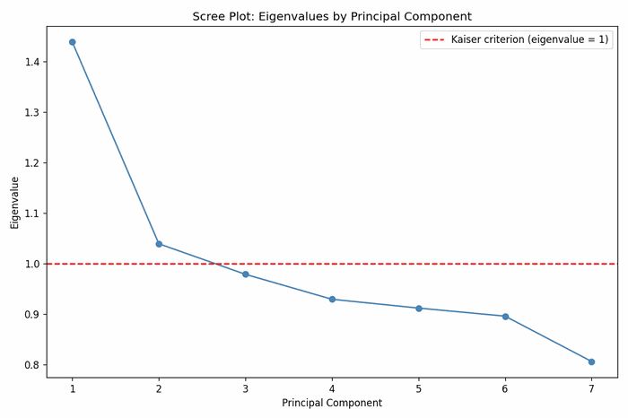
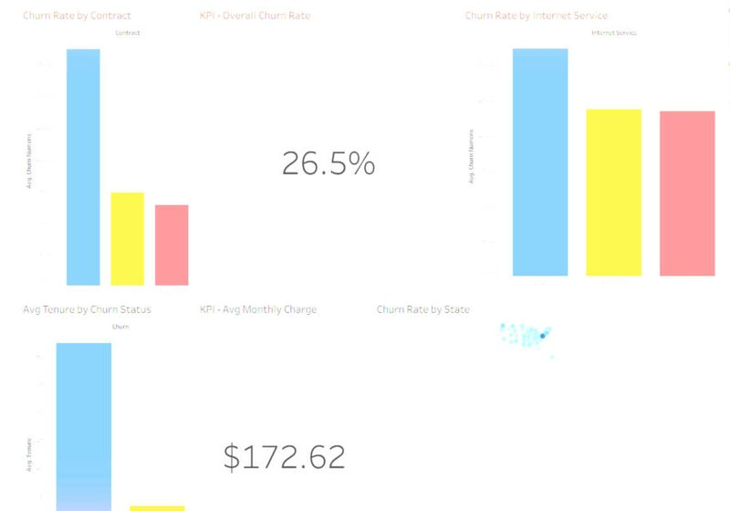
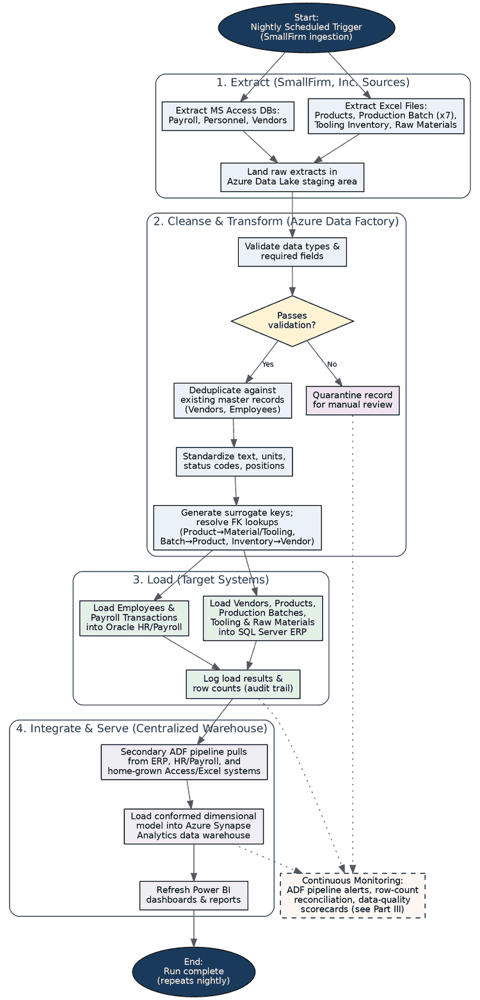
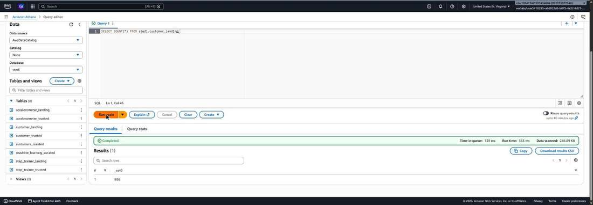
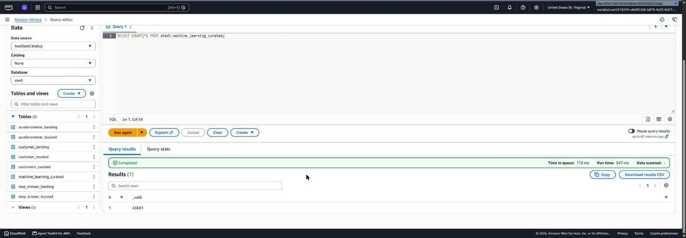

I work at the intersection of data engineering, cloud architecture, and applied analytics: designing the schema that stores data correctly, building the pipeline that moves and validates it, and building the model or query that turns it into a decision.
I just graduated with a Master's in Data Analytics and Data Engineering, and this page is basically my lab notebook made public: real schemas, real code, real pipelines, and the statistical tests behind them, laid out in the order I actually built them, so the progression from database design through to a hypothesis-driven capstone is visible end to end. No slideshow, just the work.
Before that I spent several years in technical support and IT operations, and hold an Associate of Arts and Sciences in Information Technology and a Bachelor's in Data Analytics and Artificial Intelligence. That operational background is part of why the work below leans toward production concerns, monitoring, validation, reproducibility, rather than stopping once a model runs once.
Languages
Databases
Data Engineering
Cloud & Infrastructure
Analytics & Modeling
Ten projects, in the order I built them. Each one builds on the last: databases before pipelines, pipelines before models, models before the cloud architecture that serves them at scale, all of it before a capstone that had to justify itself with a statistical test rather than an opinion. Click any one to jump to the full write-up.
The full write-up for each project: the problem, what I built, the real technical decisions behind it, and the evidence. Where a project produced something interactive, you can run it yourself below.
Database Foundations: Relational & Non-Relational Design
EcoMart (PostgreSQL) & HealthTrack (MongoDB)
This was the first project in the program, and it was built around a direct comparison: take two different business problems and solve each one with the database model that actually fits, instead of defaulting to one tool for everything.
For the first scenario, EcoMart, an online marketplace selling sustainable products, needed to move off a single flat CSV of sales records and into something that could support repeated reporting without breaking. I designed a normalized PostgreSQL schema: a staging table that loads the raw CSV as text first, then a populate script that casts and moves the data into three typed tables, orders, products, and sales, linked by order_id and item_type. That separation means a bad row in the raw import never corrupts the typed tables, and business questions like which category sells best or which region is most profitable become a straightforward join and aggregate instead of a full-file scan.
For the second scenario, HealthTrack, the problem had the opposite shape: patient medical records and wearable fitness-tracker data arriving as JSON, with fields that don't look the same from one document to the next. I designed a MongoDB database with patients and fitness_trackers collections, imported the source JSON directly, and queried the nested document structure without flattening it first, which is exactly the case NoSQL is built for.
Building both back to back, in the same course, made the tradeoff concrete instead of theoretical: relational when the data is uniform and the relationships matter, document-based when the data is semi-structured and the shape varies from record to record.
Scripting and Programming: Automated Analysis Pipeline
Equity fund dataset, 156 U.S. companies
This project started with a flowchart and pseudocode and ended with a working Python program that implements it exactly. The program takes a dataset of 156 U.S. equity fund companies and runs it through six deterministic steps: import the Excel source into a pandas DataFrame, remove duplicate rows while keeping one valid copy of each, group the cleaned data by business state and compute full descriptive statistics for every numeric field, isolate every business with a negative debt-to-equity ratio into its own table for review, compute a debt-to-income ratio for every business, and export all of it to a multi-sheet Excel workbook.
The detail that mattered most was the division itself: debt-to-income is long-term debt divided by revenue, and a handful of businesses in the dataset report zero revenue. Dividing by zero there doesn't just throw an exception, it can silently produce an infinite value if you're not careful, which then poisons any aggregate built on top of it. The program checks for a zero denominator explicitly and returns NaN instead, so downstream statistics correctly ignore it rather than being distorted. You can run that exact check below.
Data Preparation, Exploration & Market Basket Analysis
Employee Turnover (10,199 records) & Allias Megastore transactions
This project covered the two ends of exploratory data work: getting a messy dataset into a trustworthy state, and finding non-obvious patterns once it is. The first part started with a raw Employee Turnover dataset, 10,199 records across 16 variables. Before any analysis, every variable had to be profiled and typed correctly, quantitative vs. qualitative, continuous vs. discrete, nominal vs. ordinal, and checked for the kind of problems that quietly break downstream models: missing values, inconsistent categories, and outliers that are really data-entry errors rather than real extremes.
The second task moved from cleaning to pattern discovery with market basket analysis on a real transactional dataset from Allias Megastore, where each row is one product within one customer order. I used the Apriori algorithm to mine frequent itemsets at a minimum support of 0.05, generate association rules at a minimum lift of 1.0, and rank the results by lift rather than support or confidence alone, because lift is the metric that actually measures whether two products are purchased together more often than chance would predict.
The strongest rule the algorithm surfaced: customers who bought the Childrens Cutlery Spaceboy set also bought the Childrens Cutlery Dolly Girl set in 92.59% of those orders, about 14 times more often than random chance would predict, a genuine, actionable cross-sell signal rather than a coincidence of two popular items.
Predictive Modeling: Regression & Principal Component Analysis
Housing dataset, 7,000 records, 22 variables
This project was three parts built on the same 7,000-record housing dataset, each asking a different kind of question of it. The first part fit a multiple linear regression model to predict home price, starting from all candidate predictors and using backward stepwise elimination to arrive at an optimized 9-variable model, then validated it against a held-out test set and reported RMSE with scikit-learn rather than trusting the training fit alone.
The second part reframed the same kind of data as a classification problem: a logistic regression model with 17 independent variables predicting whether a home falls into a luxury or non-luxury category, evaluated with McFadden's pseudo R-squared, AIC/BIC, and a confusion matrix on a stratified 80/20 train/test split. This part went through several revisions after an evaluator flagged a subtle data-leakage bug: an early cleaning step let information from the target variable influence a predictor before the split, inflating the model's apparent performance. Finding that, fixing it, and regenerating every downstream statistic and screenshot from the corrected run was the real work of it, and the one that taught me to check for leakage as a first step, not an afterthought.
The third part dropped the target variable entirely and ran an unsupervised PCA on seven standardized predictors, using the Kaiser rule (retain any component with an eigenvalue greater than 1) to decide how many components to keep. Two were retained, PC1 (eigenvalue 1.4388) and PC2 (eigenvalue 1.0393), together explaining 35.40% of total variance, with PC1 loading most heavily on distance to city center and home age, and PC2 loading on local employment rate and crime rate, two genuinely different underlying dimensions the seven raw variables were compressing.
Principal Component Analysis
Same dataset, reduced to 7 standardized variables. Click a bar to see the loading weights for that component.

Data Analytics & Visualization
Interactive Tableau KPI dashboard
This one was two parts: design and build a dashboard, then present it. For the first part, I built an interactive Tableau workbook against a customer churn dataset, with four coordinated visualizations and a set of filters, contract type, internet service, tenure, and state, that update every chart on the dashboard at once rather than requiring a separate view per slice of the data. The accompanying write-up documented the reasoning behind each visualization choice and each KPI, tying every chart back to a specific business question rather than including a chart because the software made one easy.
For the second part, I recorded a presentation walking through the finished dashboard: what each KPI means, what the filters reveal when used, and what the data actually supports recommending. The screenshot below is pulled straight from the live workbook: an overall churn rate of 26.5%, an average monthly charge of $172.62, and the contract type and internet service breakdowns that explain most of the swing between them.

MLOps & Automation: Flight Delay Prediction Pipeline
BTS flight-delay data, GitLab CI/CD
This project asked a different question than the modeling work before it: not just can you build a model, but can you make it reproducible, trackable, and deployable by someone other than you. Working from real Bureau of Transportation Statistics flight-delay data for a chosen airport, I built the pipeline across three parts and three GitLab merge requests.
The first part built the modeling pipeline itself: import and format scripts with DVC versioning both the raw and cleaned datasets so any run can be traced back to the exact data it used, a cleaning and filtering stage, and an MLflow-tracked training script that logs parameters, metrics, and the model artifact for every run automatically, not just the best one. The second part leaned on real verification: rather than trust the pipeline worked, I ran it end to end against the actual project and captured fresh evidence, a genuine successful run, shown below, after catching that the first pass through didn't clearly demonstrate a full run. The third part packaged the trained model behind a FastAPI endpoint, containerized it with Docker, and wired a GitLab CI/CD pipeline to build, test, and deploy it automatically on every push to the working branch, with an automated test suite guarding the API contract.
Pulls raw flight delay records from the Bureau of Transportation Statistics and versions the raw file with DVC.
Filters and cleans the records, handling missing values and outliers, and versions the cleaned dataset separately.
Trains the delay prediction model and saves it as a versioned artifact.
MLflow records parameters, metrics, and artifacts for every run automatically. Below is a real run from this project.

Packages the model behind a FastAPI endpoint in Docker, tested and deployed automatically through GitLab CI/CD.
Cloud Database Design & Implementation
Alliah Company — GCP architecture & BigQuery
This project was two parts: propose a cloud architecture, then actually build the database it calls for. For the first part, I designed a Google Cloud Platform architecture for a retailer, Alliah Company, processing roughly 10 TB of transaction data per day: Cloud Pub/Sub for streaming ingestion, Cloud Dataflow for validation and deduplication, Cloud Storage as the raw data lake with a tiered lifecycle policy, and two different serving layers for two different needs, a nested BigQuery warehouse mirroring the source JSON for analytics, and a normalized Cloud SQL for PostgreSQL database for operational lookups.


Serverless publish/subscribe ingestion for transaction and customer interaction events the moment they occur, decoupling producers from downstream processing.
Serverless streaming and batch processing (Apache Beam) that validates and de-duplicates records before routing them to storage.
Raw data lake retaining an unmodified copy of every record, with a lifecycle policy moving older objects to cheaper storage tiers after 30 and 90 days.
Serverless analytics warehouse storing the data in a nested schema that mirrors the source JSON, avoiding a separate flattening step for BI queries.
Regional, high availability relational database storing the same data in a normalized 5-table schema for operational lookups and financial reporting.
For the second part, I implemented the BigQuery half of that proposal directly in a hosted GCP sandbox rather than just describing it. The schema uses a customer STRUCT and a repeated shopping_cart ARRAY<STRUCT> in a single transactions table, which lets one row hold a full order, including a variable number of cart items, without a join to a separate line-items table. Ten real records were loaded with an INSERT ... SELECT FROM UNNEST([...]) statement, BigQuery's pattern for inserting several complete nested rows in one statement, since it doesn't support a plain multi-row VALUES list, and I wrote and ran three queries against the live table: a DISTINCT query flattening unique customers, an UNNEST query flattening one customer's shopping cart into individual item rows, and a GROUP BY aggregate ranking customers by total spend.
Select a query above.
Data Governance & Automated Data Pipelines
SmallFirm, Inc. monitoring plan & Airflow/Redshift pipeline
This project paired a written governance deliverable with a working one. The first part designed a full data-processing solution for SmallFirm, Inc., a scenario with multiple on-premises source systems, MS Access databases for payroll, personnel, and vendors, and Excel files for products, production batches, tooling, and raw materials, that needed to land in a centralized Azure Synapse warehouse. I mapped the source-to-target attributes explicitly, then diagrammed the full process below: extract, cleanse and validate through Azure Data Factory, quarantine anything that fails validation rather than silently dropping or guessing at it, load into the appropriate target system, and integrate into the warehouse for reporting.

The second part built directly on that diagram: a continuous monitoring plan with concrete, measurable thresholds instead of vague goals, shown below, plus specific benchmarks and a troubleshooting runbook for when a threshold is breached.
To demonstrate the same governance pattern in working code rather than only on paper, I also built and ran an Apache Airflow-orchestrated data pipeline, included here because it implements exactly the kind of automated data-quality gate this plan calls for: four custom Airflow operators staging JSON events from S3 into Redshift, building fact and dimension tables, and a dedicated data-quality operator that runs row-count and null checks after every load and fails the DAG loudly, rather than silently, if the data doesn't pass.
Data Quality Rule Engine
A standalone version of the same checks the data-quality operator runs: row counts, null rates, and load latency, each checked against a threshold and flagged instead of assumed fine.
Big Data Architecture at Scale
STEDI Human Balance Analytics — Azure proposal & applied AWS Glue lakehouse
This project was a big data architecture proposal for STEDI, a balance-training device company whose Step Trainer hardware and companion mobile app produce three raw data streams: customer profile data, mobile accelerometer readings, and Step Trainer sensor readings. The scenario's real constraint shaped the whole design: STEDI is contractually restricted from building on AWS, so the proposal runs entirely on Microsoft Azure and Microsoft Fabric, ingesting and privacy-filtering all three streams, dropping any customer who hasn't consented to share data before it reaches anything else, into a single trusted, machine-learning-ready dataset for the step-detection model at the core of STEDI's product.
To go beyond the written proposal, I separately built a hands-on implementation of the same landing → trusted → curated medallion pattern on a different, freely-available stack: an AWS Glue and Athena data lakehouse, with five Glue ETL jobs moving the same three STEDI data streams through progressively more trustworthy layers, each stage verified with real row counts in the AWS console rather than assumed to have worked.


Data Engineering Capstone: Automated Data Quality Validation
Meridian Retail Co. — hypothesis-driven validation pipeline
The capstone tied everything earlier together into one hypothesis-driven project. The premise: Meridian Retail Co., a fictional multi-vendor e-commerce retailer, relies on manual review to catch defective order records, a missing customer ID, a negative quantity, a non-numeric price, an invalid shipping method, and manual review at volume inevitably misses some of them. My hypothesis was that an automated, rule-based validation pipeline would catch a statistically significantly higher percentage of those defects than manual review, measured by the residual error rate reaching downstream reporting.
To test it properly rather than just assert it, I generated a synthetic dataset of 10,000 order records, nested customer profile, repeated shopping-cart array, the same BigQuery modeling pattern I'd used in an earlier cloud database project, with 800 defects deliberately injected, evenly split across the four defect types. I loaded the data into BigQuery and built a rule-based validation query checking every record against all four conditions, then separately simulated Meridian's existing manual process at a 35% catch probability, a conservative estimate grounded in documented human-review performance at volume.
The automated pipeline caught all 800 of 800 injected defects, a 100% catch rate, bringing the residual error rate reaching the reporting layer down to 0%. The simulated manual process caught 279 of 800 (34.9%), leaving a 5.21% residual error rate still reaching downstream reports. A two-proportion z-test comparing the two error rates returned z = 23.129, p < .001, rejecting the null hypothesis: the gap is not attributable to chance. I presented the full analysis, the pipeline, the statistical test, and the business recommendation, in a written report, a slide deck, and a recorded presentation.